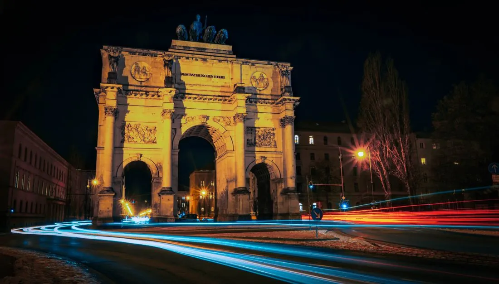
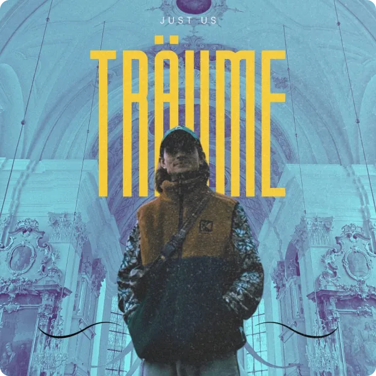
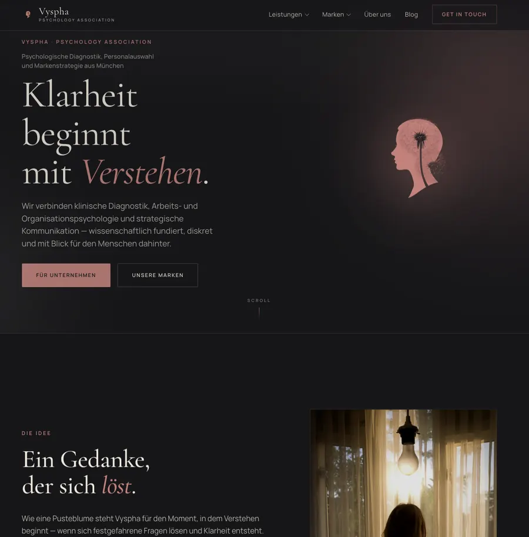
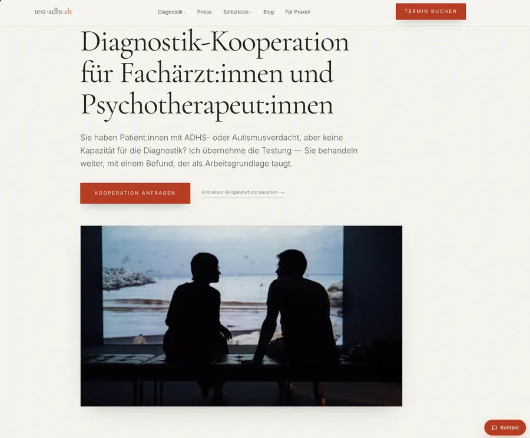
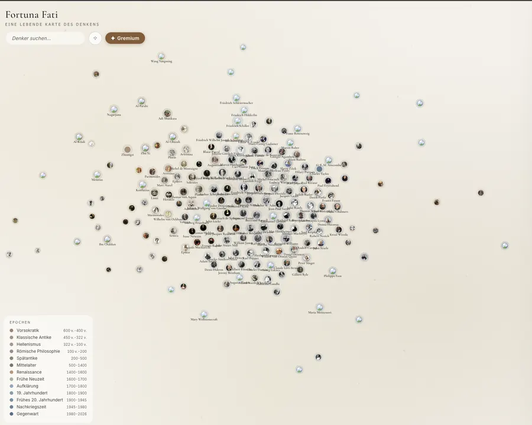
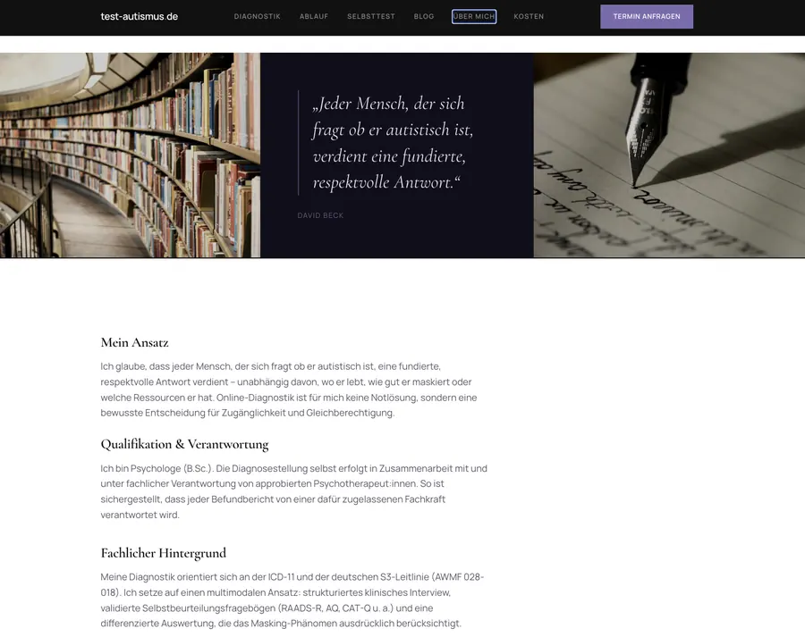
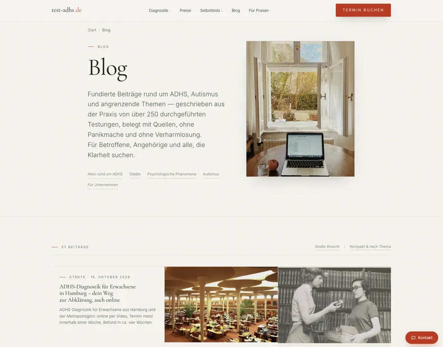
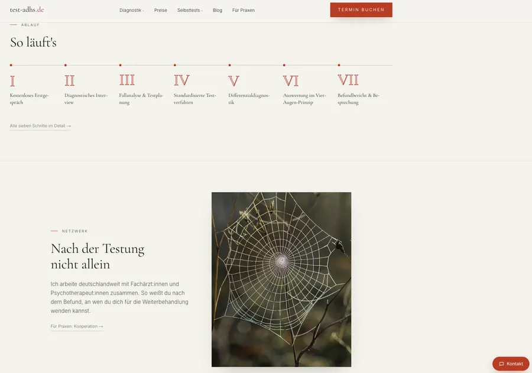
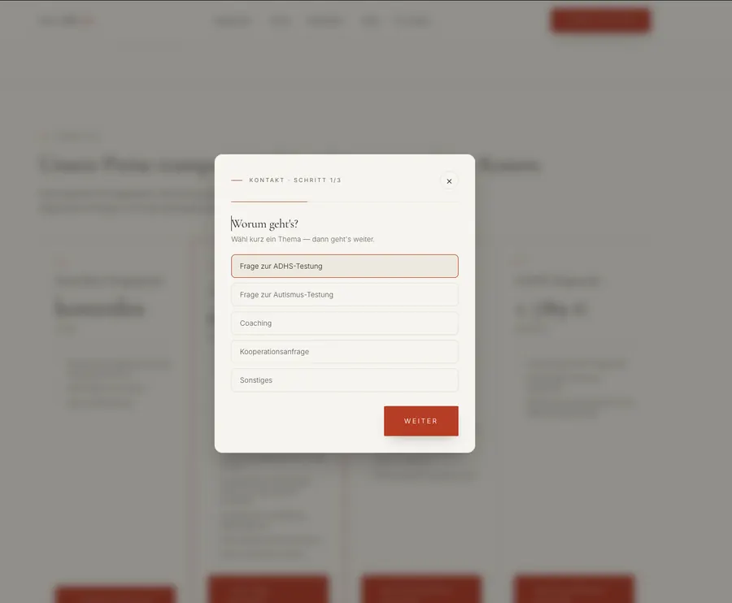
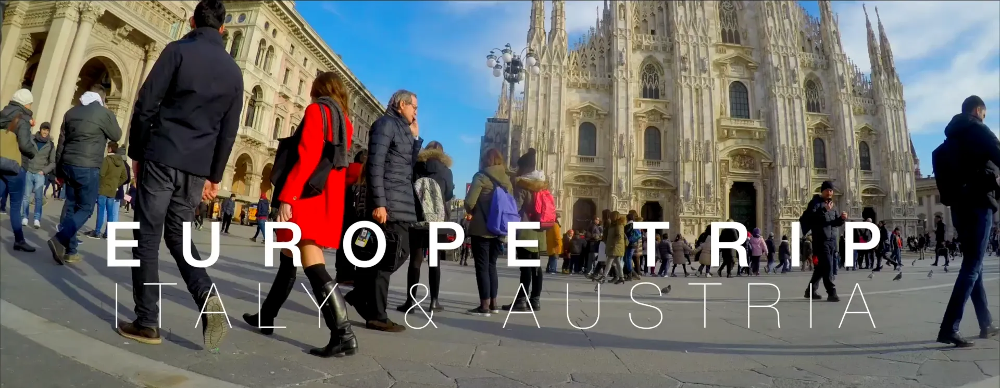

Unser PortfolioFotografie & Film aus München
Wir drehen Imagefilme und fotografieren Hochzeiten, Produkte und Events. Für die Künstler Magic Hoffmann und JUST US produzieren wir Videos und betreuen ihren kompletten Social-Media-Auftritt. Die Websites, die wir gestaltet haben, finden Sie unter Digitale Präsenz.
Unser Team aus Filmemachern und Fotografen begleitet Sie von der ersten Idee bis zur fertigen Auslieferung. Wir entwickeln das Konzept mit Ihnen, planen den Dreh und kümmern uns danach um Schnitt und Bearbeitung. Wir sitzen in München und reisen für Projekte quer durch Europa.
Unten sehen Sie eine Auswahl unserer Arbeiten. Wenn Sie etwas Ähnliches vorhaben, schreiben Sie uns.
Portfolio
Ausgewählte Arbeiten aus Foto und Film


Weniger Worte. Mehr Wirkung.
Ein Blick auf unsere Bildsprache
Jedes Projekt ein Original
Jedes Projekt beginnt mit einer Vision. Wir verwandeln sie in Bilder, die wirken und Emotionen wecken, lange nachdem der Moment vorbei ist.
Ostküste, Australien
Nachtleben
Nächte, die Eindruck hinterlassen.




Creative Collaborations
Artists We Work With
Für beide Künstler produzieren wir Videos und betreuen den kompletten Social-Media-Auftritt – von der Idee bis zum fertigen Post. Mehr zur Social-Media-Betreuung
MAGIC HOFFMANN
EINE EINHEIT


JUST US
TRÄUME IM MONDLICHT

Image-Content für Unternehmen
Wir übersetzen die Identität Ihrer Marke in bewegende Bilder. Von Führungsinterviews und Firmenprofilen bis zu Produktlaunches und Eventberichterstattung – jedes Bild dient Ihrer Botschaft.
Webdesign
Digitale Präsenz
Gute Bilder brauchen einen Ort, an dem sie wirken. Deshalb bauen wir für unsere Kunden auch die Bühne dafür: Websites mit Haltung – ruhig, klar und mit demselben Blick fürs Detail wie hinter der Kamera. Von der psychologischen Praxis bis zum Kulturprojekt, vom ersten Entwurf bis zum Livegang.
Ihre Website anfragen Mehr zu Webdesign














Ein Tag, der nur einmal passiert
Ein Tag wie dieser kommt nicht wieder. Wir halten fest, was zählt – die echten Gefühle, die echten Menschen, die echte Geschichte.